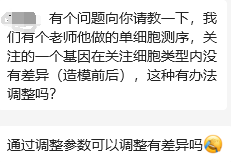

如此科研
原文：https://mp.weixin.qq.com/s?__biz=MzAwMzIzOTk5OQ==&mid=2247510033&idx=1&sn=3613c5a5de9ee6774ea023677c9677f7&chksm=9b3cd141ac4b5857ee9cea3546f56148c888e87b43ca2e7e6283afaee58c6be250d6a905da07#rd 合集：漫谈胡侃
这不是我第一次被这样提问了，这种"先验式 "的科研似乎已经成为了大家的共识。我现在见过太多所谓的科研项目，立项的时候就把技术路线、预计结果在标书里写好。在实际开展研究的过程中，对与期望结果相反的现象置若罔闻 ，而不是寄希望于找出科研进程中的谬误 。进行大量的试验后从结果中挑出符合自己预期的结果 ，这种行为可谓是编数据的"又当又立"版。各位可以扪心自问，见过多少起这种掩耳盗铃 式的科研。也难怪当下的科研成果无法转换为实际的生产力。这场庞氏骗局的最终买单者，恐怕是我们每一个人。

好了，锐评完毕。说回技术层面，一个本应该显著的差异基因没有观察到预计的趋势，可能有以下原因：1、scRNA-Seq矩阵的稀疏性 ：正常的Bulk RNA-Seq大约是6~10GB 的测序量，而scRNA-Seq需要在100GB 的测序量下完整成千上万个细胞的转录组定量，显然对于每一个细胞而言测序深度 是不足的。再考虑到信噪比的提升，单细胞测序技术对于基因表达的检测灵敏度十分有限，尤其是低丰度的基因。2、差异分析结果可能受到样本量大小 的影响，这也就是为什么现在CNS里的单细胞文章动辄"百万细胞 "级别起步。如果差异基因所在的细胞类型数量较小，那么扩大样本量来增加结果的可信度是十分有必要的。3、前期属于处理问题：前期的质控、双细胞过滤、细胞分群等环节都需要优化并找到合适的参数。尤其是单细胞测序数据的细胞分群 可能存在误差，如果分群不准确(细胞在不同状态下可能表现出异质性 ，这种差异存在于细胞类型之间、也会出现在细胞类型的亚群 内。这种单细胞异质性可能掩盖了某些基因的差异表达。即使细胞在总体上属于相同类型，也可能存在亚型，这种异质性可能会模糊差异基因的识别。)，则可能将不同类型的细胞混合在一起进行差异分析，从而导致一些差异基因未被检测到或错误地被归因于其他细胞类型。4、实验技术噪音：包括来自于实验操作、批次效应、测序仪器、PCR扩增等步骤的技术噪音，这些噪音可能干扰了差异分析的结果，使得差异基因未被准确地检测到。不过相较于数据分析环节，实验技术引入的噪音比较难以纠正，且一但发生，不可更改。

如何联系我们

 公众号后台消息回复不便，这里给大家留一下领取资料及免费服务器(足够支持你完成硕博生涯的生信环境)的微信号 ，方便各位随时交流、提建议（别问在么，添加时直接说来意）。此外呼声一直很高的交流群 也建好了，欢迎大家入群讨论：
公众号后台消息回复不便，这里给大家留一下领取资料及免费服务器(足够支持你完成硕博生涯的生信环境)的微信号 ，方便各位随时交流、提建议（别问在么，添加时直接说来意）。此外呼声一直很高的交流群 也建好了，欢迎大家入群讨论：
大家可以阅读完这几篇之后添加给生信入门初学者的小贴士 如何搜索公众号过往发布内容

 您点的每个赞和在看，我都认真当成了喜欢
您点的每个赞和在看，我都认真当成了喜欢